Augmented Reality Sandbox
Project Team: Specialized Water Modeling and Applied Technology Unit
Presenter: Jeremiah Lant / Hydrologist / jlant@usgs.gov
Outline
- Terminology
- Augmented Reality Sandbox
- Other Related Technologies and Ideas
- Potential Future for GIS
Terminology
- Augmented Reality (AR)
- a live direct or indirect view of a physical, real-world environment whose elements are augmented (or supplemented) by computer-generated sensory input such as sound, video, graphics or GPS data.
- Virtual Reality (VR)
- the computer-generated simulation of a three-dimensional image or environment that can be interacted with in a seemingly real or physical way by a person using special electronic equipment, such as a helmet with a screen inside or gloves fitted with sensors.
- Mixed Reality (MR)
- the merging of real and virtual worlds to produce new environments and visualizations where physical and digital objects co-exist and interact in real time.
- Sandbox
- a shallow box or hollow in the ground partly filled with sand for children to play in.
Augmented Reality Sandbox
Who, What, and Why
- created by a research team at UC Davis
- an augmented reality simulation of a topographical map with moving water on top of hills and valleys you create.
- started with the goal of creating an interactive display for science museums to help teach patrons about freshwater and the watershed in relation to topography
Shaping the landscape
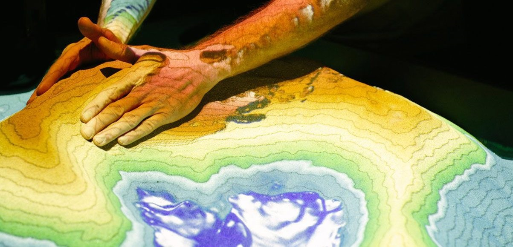
Making it rain
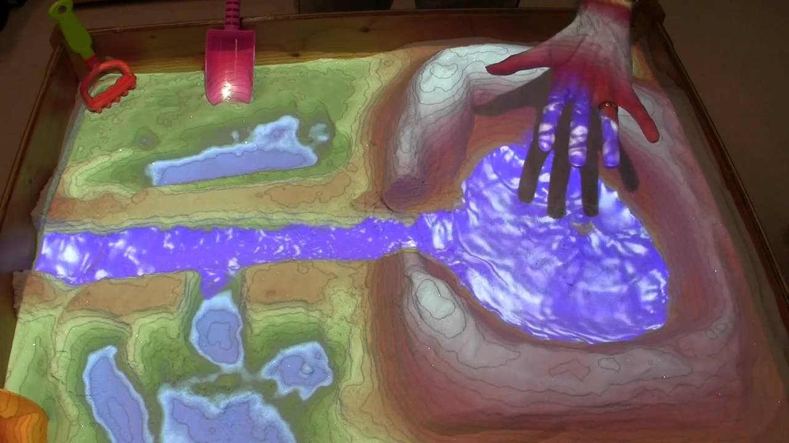
Making a mountain
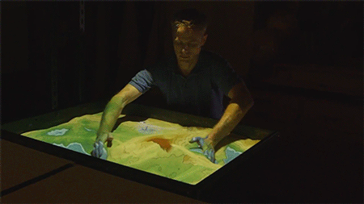Making a lake

AR Sandbox Setup
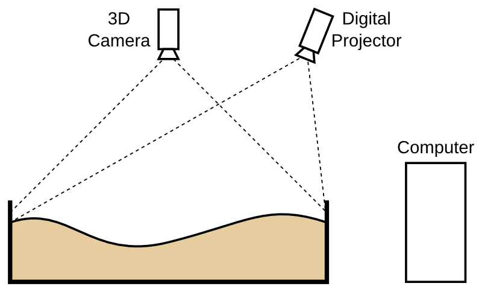
AR Sandbox requires the following hardware components:
- A computer with a good graphics card, running any version of Linux.
- The AR Sandbox software, or rather the underlying Kinect 3D Video Package as of version 2.8
- A Microsoft Kinect 3D camera for Xbox 360.
- A digital data projector with a digital video interface, such as HDMI, DVI, or DisplayPort.
- A sandbox with a way to mount the Kinect camera and the projector above the sandbox.
- Sand.
3D Camera - Kinect
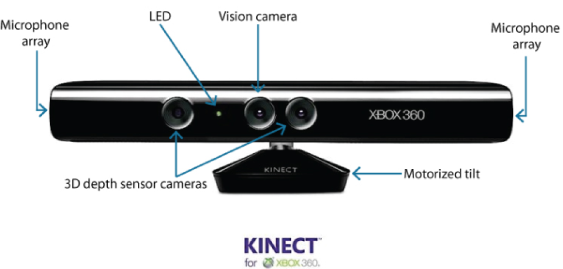
Physics
Saint-Venant Shallow Water Equations

UC Davis team applied the equations to the different levels of topography allowing for realistic flows of water that move in relationship to the hills and valleys you create with your hand or shovel.
Current and Future Uses
- Educational tool
- Simulate water movement through watersheds with real topography
- Simulate real flood events
- Simulate rainfall runoff scenarios on different land use types; i.e. agricultural fields, city streets, ...
- many more...
Other Related Technologies and Ideas
Layar Instructions
Layar at USGS
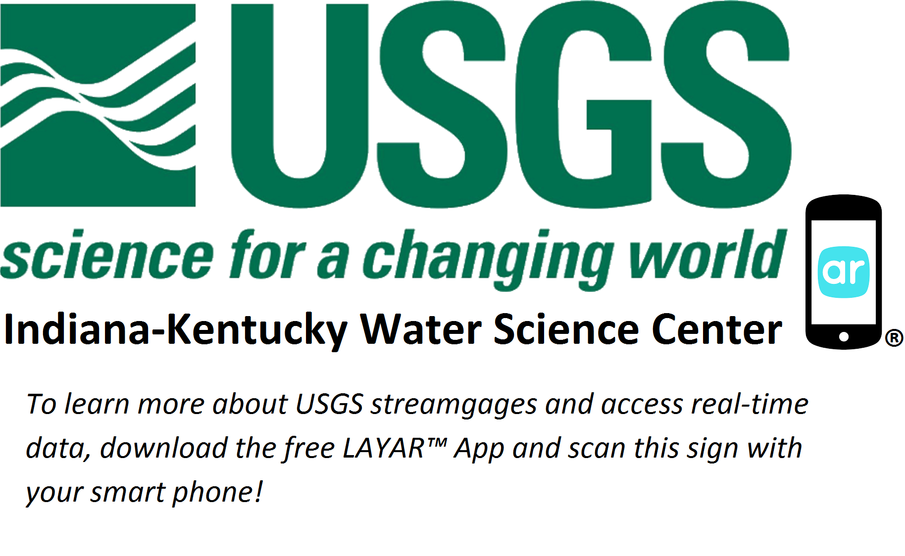
Layar at USGS
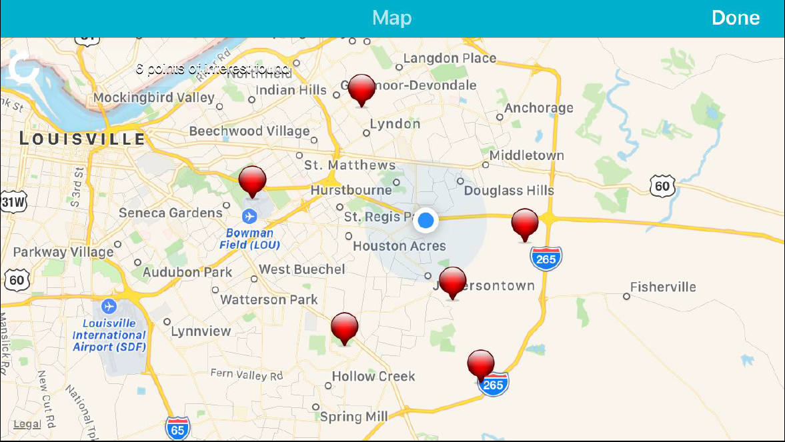
Layar at USGS
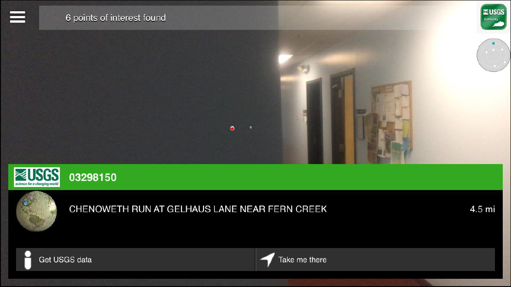
USGS Flood Inundation Mapper
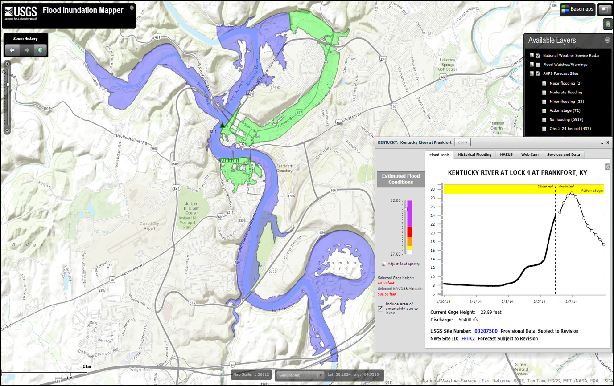
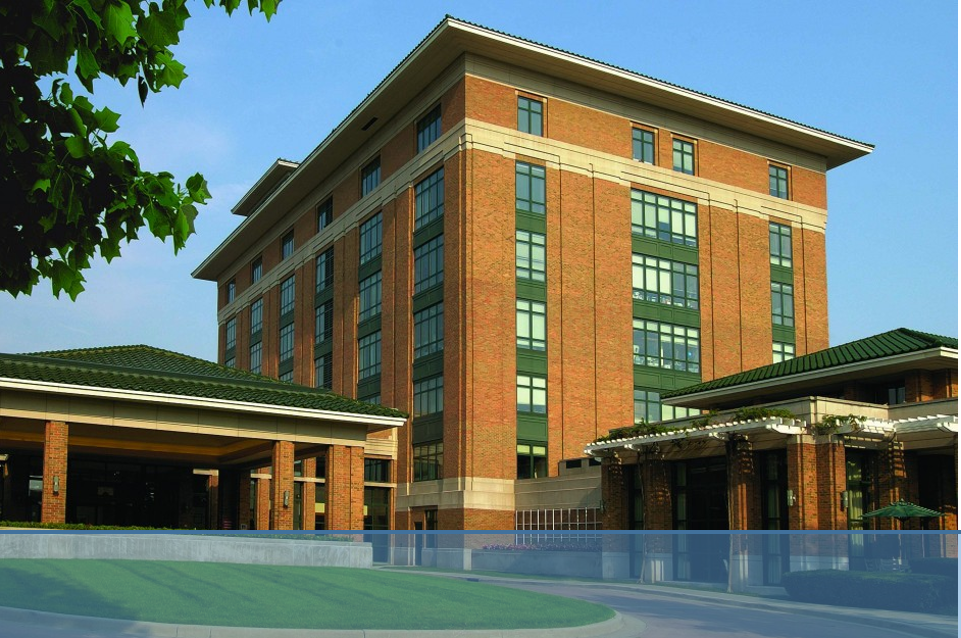
Microsoft Hololens
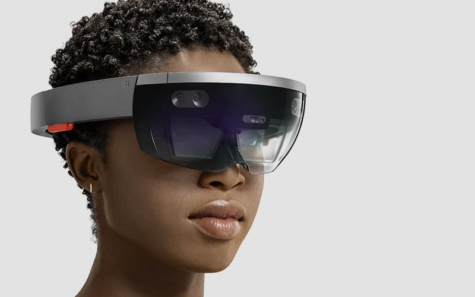
Holographic Maps

Holomaps by Taqtile
ESRI Holomap
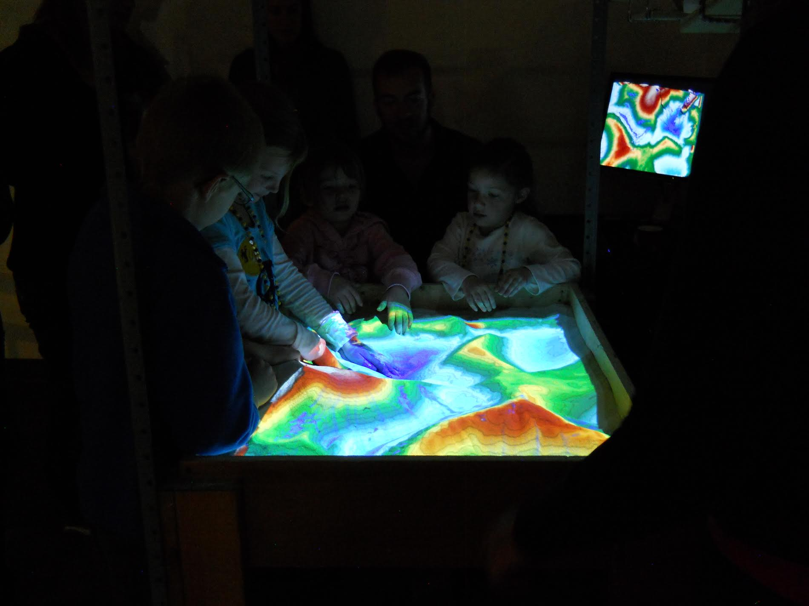
Thank you!
Email: jlant@usgs.gov
GitHub: https://github.com/jlant-usgs